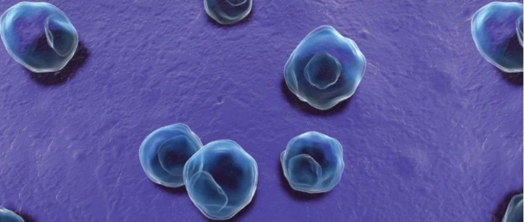

我下面流水了，臭臭的，我怎么了？
小爱
爱同行 夕颜
2022年05月14日 10:30
广东
最近常常被人问到：“我下面流水了，臭臭的，我怎么了？”
这样的情况可能感染了性病中的淋病或非淋了！这是两种最最常见的性病，分别由淋球菌和沙眼衣原体导致。平时我们总是检测HIV和梅毒，绝少检测这两项，因为这两项不是采集血液检测的，想买个试纸自己测都没门路。
幸好，最近在深圳市慢性病防治中心的支持下，爱同行将在平时的HIV和梅毒检测之外，增加这两项的检测，免费！免费！！免费！！！羊毛已经准备好了，快来薅吧
预约方式：点击下方名片关注本公众号--》点击菜单栏中间的“预约检测”--》选择“深圳市罗湖办公室”，填写预约信息提交即可。为什么预约？因为预约不用等呀